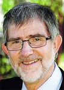
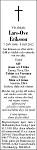

"Love" Lars-Ove Gunnar Eriksson
Professor i vattenbruk vid SLU i Umeå från 1987. Blev 65 år.
| Född: | 1946-09-29 Myrberg 1:15, Bastruträsk, Bastuträsk kbfd, Norsjö sn. [1] |
|---|
| Död: | 2012-05-10 Bärnstensvägen 55, Umeå, Ålidhems fs, Umeå kn. [2] |
|---|
| Vigsel: | 1970-07-18 Umeå, Ålidhems fs, Umeå kn. [3] |
|---|
| Levde: | 1991 Bärnstensvägen 55, Umeå, Ålidhems fs, Umeå kn. [3] |
|---|
Noteringar
Lars-Ove Eriksson in memoriam
NYHET: 2012-05-30
Lars-Ove Eriksson har avlidit efter en lång tids sjukdom. En vattenbrukslegend har gått ur tiden.
Lars-Ove var professor i vattenbruk vid SLU i Umeå. Han tillträdde sin tjänst 1987 och verkade oavbrutet med att stödja utvecklingen av ett hållbart, svenskt vattenbruk med innovativ forskning, kunskapsbaserad information och samverkan mellan forskning och samhälle. Ett av de många bidragen var initieringen och utvecklingen av avelsprogrammet för röding, som resulterat i rödingen Arctic Superior som numera är stommen i fiskodlingarna i norra Sveriges vattenmagasin. Ett annat viktigt bidrag är Robin Hood-konceptet inom vattenbruket, som i korthet innebär att flytta näringsämnen från det näringsrika Östersjön till näringsfattiga vattenmagasin till gagn för såväl fiskodling, regional utveckling som biologisk mångfald.
Lars-Ove insåg också tidigt betydelsen av samverkan för implementering av forskningsresultat i samhället till gagn för näring och utveckling, men även för att främja den vetenskapliga processen. Centrum för vilt- och fiskforskning inrättades 2000 på förslag av Lars-Ove och kollegorna Kjell Danell (SLU) och Lennart Persson (Umeå universitet). På initiativ av Lars-Ove inleddes även det konstruktiva och framåtsyftande samarbete mellan SLU och Göteborgs universitet som, utöver en rad gemensamma forskningsprojekt, även resulterat i Nationellt Kompetenscentrum för Vattenbruk, en nod för kunskapsbaserad information och utveckling inom det svenska vattenbruket.
Lars-Ove, eller ”Love” som han kallades, var en älskvärd och hedervärd person, en framgångsrik forskare och en mycket god ledare. Vi är många som kommer att sakna honom.
Carl-Gustaf Thulin
föreståndare, Centrum för vilt- och fiskforskning
AV: ROBERT KARLSSON
swemarc.gu.se/Aktuellt/Nyheter/fulltext//lars-ove-eriksson-in-memoriam.cid1082140
****************************************************
Lars-Ove Eriksson
Lars-Ove Eriksson kommer alltid att finnas i våra minnen, som vän, jakt- och fiskekompis, handledare och mentor. Hans ödmjuka och öppna ledarstil skapade förutsättningar för en hållbar forskarmiljö och för långvariga vänskapsband. Kanske hade hans uppväxt bland skog, svamp, fisk, minkar och vänliga människor i Myrberget (Norsjö) satt sin prägel. Han var en hedersman som stod för allt han lovat.
Han blev doktor vid Umeå universitet efter slit i Kaltisjokks bäckmiljö vid Messaure biologiska station. Vistelsen vid Max Planck-institutet i Tyskland gjorde honom sedan mycket intresserad av säsongsbiologiska anpassningar hos fisk och han visade att de har biologiska klockor som styrs av förändringen i daglängd. Vid hemkomsten till Umeå universitet i slutet av 1970-talet var han en drivkraft för tillkomsten av Umeå marina forskningscentrum (UMF) och var under tre år på 1980-talet dess ledare.
Som professor i vattenbruk vid SLU 1987 började han utveckla svenskt vattenbruk vid Vattenbruksinstitutionen, senare Institutionen för vilt, fisk och miljö, vid SLU:s skogliga fakultet. Lars-Oves nyfikenhet, framsynthet och visionära gåva gjorde att SLU blev ett fiskinriktat universitet. Forskningen skulle leda till praktiska tillämpningar för samhällets och regionens bästa. Han strävade efter att såväl bevara som exploatera fiskresursen.
Lars-Ove var en framstående lärare och betydde mycket som handledare för studenter, doktorander och seniora forskare då han byggde en tvärvetenskaplig forskargrupp i fiskbiologi. Hans tro på sina elever gjorde att de utvecklades till självständiga och kompetenta medspelare.
Fritiden var prioriterad mot jakt- och fiskeintresset. Vi är många som fått lära oss hur man tar öringen i bäcken och hur en tjäder ska fällas. Minnen som är många och trivsamma! Vi är tacksamma för att vi fick följa med honom på hans resa i livets med- och motgångar och önskar att han finner fina jakt- och fiskeområden också i Nangijala i all tid, nu och framöver!
Hans Lundqvist, Jan Nilsson, Bo-Sören Viklund, Eva Brännäs, Carin Magnhagen, Helena Königsson, Anders Alanärä, och övriga, Umeå vid SLU
DN Publicerat 2012-06-07
Personhistoria
| Årtal | Ålder | Händelse |
|---|
| 1946 |
|
Födelse 1946-09-29 Myrberg 1:15, Bastruträsk, Bastuträsk kbfd, Norsjö sn [1] |
| 1970 |
23 år |
Vigsel Siv Inger Maria Johansson 1970-07-18 Umeå, Ålidhems fs, Umeå kn [3] |
| 1990 |
43 år |
Modern Helga Hallly Mariana Lund dör 1990-03-31 Kanalg 5, Bastuträsk, Norsjö fs, Norsjö kn [4] |
| 1991 |
|
Levde Siv Inger Maria Johansson 1991 Bärnstensvägen 55, Umeå, Ålidhems fs, Umeå kn [3] |
| 1992 |
45 år |
Fadern Erik Gunnar Eriksson dör 1992-01-12 Kanalg 5, Bastuträsk, Norsjö fs, Norsjö kn [5] |
| 2012 |
65 år |
Död 2012-05-10 Bärnstensvägen 55, Umeå, Ålidhems fs, Umeå kn [2] |
Dokument
Källor
| [1] | Mtl Sveriges befolkning 1950 |
| |
| | |
| [2] | FK 13 / man91 |
| |
| | |
| [3] | Mantalslängd 1991, Västerbottens län |
| |
| | |
| [4] | RTB 90 / SPAR 90 |
| |
| | |
| [5] | RTB 92 / SPAR 92 / SPAR 92f / SPAR 95 |
| |
|
|  |
Lars-Ove Eriksson,
professor i vattenbruk vid SLU i Umeå
|
| |
 |
1970-07-22. Fil stud Lars-Ove Eriksson, Nyrberg, Bastuträsk, o. småskollärere Siv Johansson, Skellefteå.
Vigselfoto i Norra Västerbotten
|
| |
|  |
| 2012-05-22. Vår älskade Lars-Ove Eriksson * 29/9 1946 . 10/5 2012 har lämnat oss efter ett liv fyllt av kärlek och omtanke om oss alla. Umeå SIV Jonas och Ulrika Emma, Tova, Elis Tobias och Veronica Albin, Signe Stina och Jonas Amanda, Ellen Syskon, släkt och vänner Må din väg gå dig till mötes, må vinden vara din vän, må solen värma din kind, må regnet vattna själens jord och tills vi möts igen må Gud hålla dig i sin hand I våra hjärtan finns du för alltid Begravningen äger rum i Hedlundakyrkan fredag 1 juni kl. 13:00. Efter akten inbjudes till minnesstund. O.s.a. senast 28/5 till Umeå Begr.byrå tel. 090-777160 el. www.ubb.nu. Tänk gärna på Diakonia pg. 903304-4 eller Cancerfonden i Norrland pg. 684446-8. |
|

{kind=link}
{kind=link}